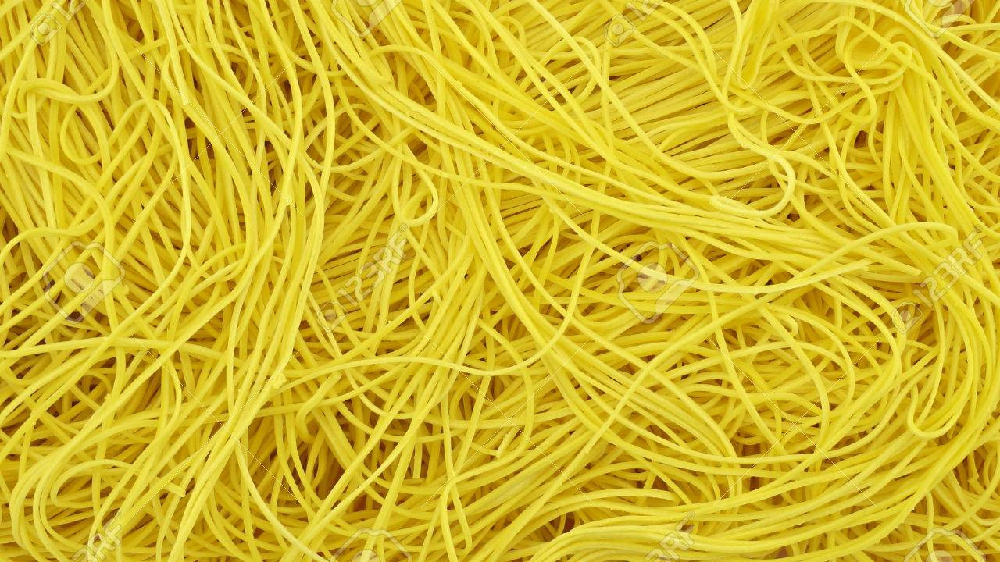
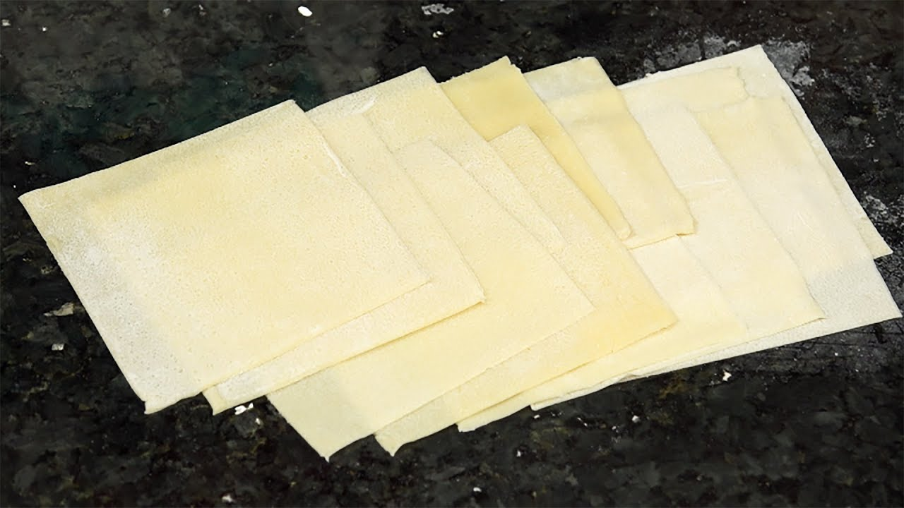
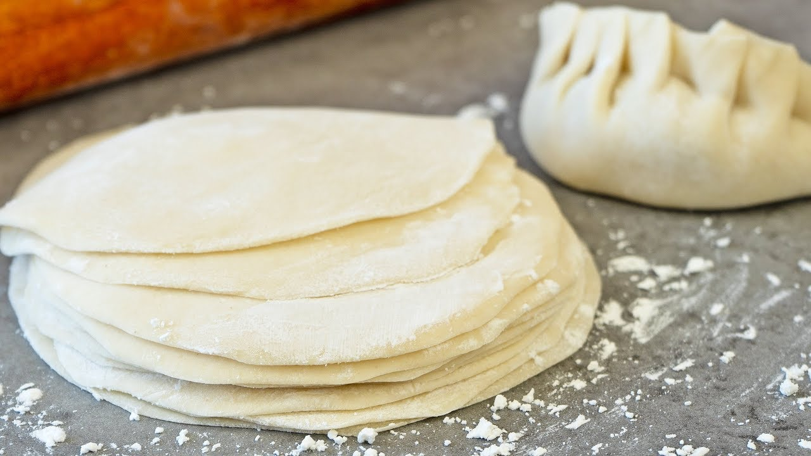
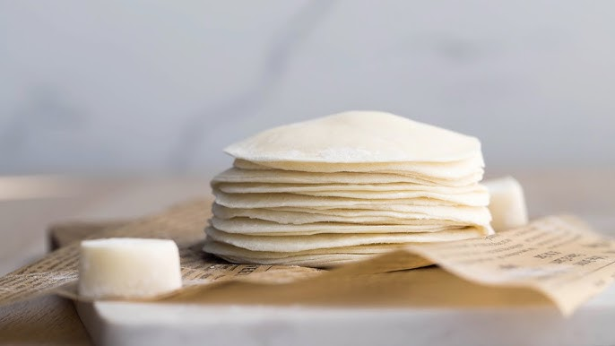
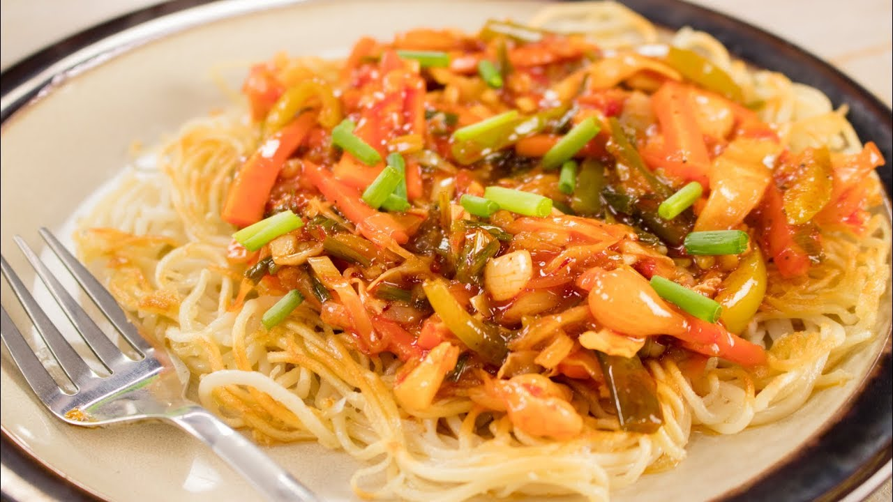

Premium Noodle Selection
Elevate your dishes with our premium noodle collection, featuring a range of options.
Choose from round noodles in 1 mm, 1.2 mm, and 1.5 mm thicknesses, or opt for the delicate flat noodles available in 1 mm and 1.2 mm.
Unleash your culinary creativity with these versatile noodles.
Choose from round noodles in 1 mm, 1.2 mm, and 1.5 mm thicknesses, or opt for the delicate flat noodles available in 1 mm and 1.2 mm.
Unleash your culinary creativity with these versatile noodles.

Wonton Elegance - Square 4"x4"
Transform your appetizers into works of art with our square wonton wrappers. Whether you prefer the classic white or the vibrant yellow, these 4"x4" wrappers provide the perfect foundation for your wonton masterpieces. Create stunning bites that captivate both the eyes and taste buds.

Artisanal Dimsum Sheets - Round Bliss
Immerse yourself in the art of dim sum making with our artisanal round sheets. Sized at 3" and 4", these sheets are meticulously crafted to enhance the authenticity of your dim sum creations. Elevate your culinary skills and delight in the delicate balance of flavors.

Mouthwatering Momo Sheets - Crafted to Perfection
Craft momos with perfection using our round sheets, available in 3" and 4" sizes. These sheets provide the ideal thickness to encase your delectable fillings, ensuring every bite is a burst of flavor. Unleash the momo maestro in you with our quality sheets.

Chop Suey Excellence - 1.5 mm Magic
Take your stir-fry game to new heights with our 1.5 mm chop suey noodles. Whether you choose the classic white or the vibrant yellow, these noodles add a delightful crunch to your dishes. Elevate your stir-fries with the magic of Chop Suey Excellence.
Noodle Sampler Pack - Explore the Varieties
Can't decide? Try our Sampler Packs – featuring a variety of round and flat noodles and sheets in different thicknesses and widths. Experiment with textures and flavors to discover your favorite. Unleash your inner chef with this diverse collection that promises a culinary adventure.